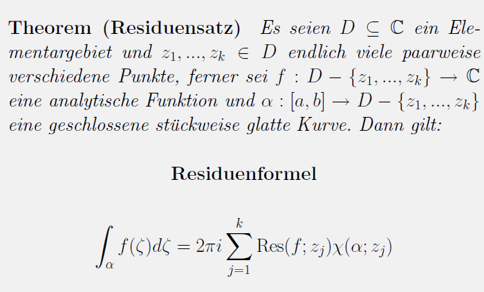

|
LaTex ist ein Textsatzprogramm und
bei Veröffentlichungen im mathematisch-naturwissenschaftlichen Bereich Standard.
Im universitären Bereich hat es sich grundsätzlich durchgesetzt.
Es unterscheidet sich von Anwendungen wie Microsoft Word,
da es nicht dem Prinzip WYSIWYG
("What You See Is What You Get") folgt. Eine in LaTex erstellte Datei muss erst mit einem
Compiler in ein lesbares Format (beispielsweise ein PDF) übersetzt werden.
Editor
Für LaTex gibt es für alle Betriebssysteme gute und kostenfreie Editoren.
Ich empfehle das TeXnicCenter
bei Windows-Betriebssystemen und
Kile für Linux und Mac.
Mit Hilfe dieser Editoren kann die Textstruktur relativ einfach aus fertigen Menü-Bausteinen
zusammengefügt werden.
Wer sich erst einmal keine Programme installieren möchte, kann es auch online versuchen:
Overleaf ist ein solcher Online-Editor.
LaTex-Distribution
Die erstellten LaTex-Files kompiliert man unter Windows mit
MiKTeX.
Diese Distribution ist kostenfrei und wird sehr häufig eingesetzt.
Wann verwendet man LaTex?
Für kurze Texte eignen sich sicherlich Anwendungen wie Word oder gleichwertige
kostenfreie Alternativen.
Für größere Arbeiten empfiehlt es sich, LaTex einzusetzen, da das
Layout professioneller wirkt und man eine größere Flexibilität
im Textaufbau hat. Ein Beispiel aus der Uni:

|